استضافت مدينة غازي عنتاب التركية مهرجان أسامة جمعة في أغسطس لعام 2017، لتذكر و تقديم الاحترام للصحفي الراحل أسامة جمعة، بعد سنة من موته المأساوي، و لإحياء عمله الذي أنجزه بأمانة عظيمة، شجاعة و مهارة. احتوى المهرجان على صور معروضة من قبل المصورين الصحفيين التابعين لIMAGESLIVE تتحدث عن نمو الربيع العربي و النزاعات التي تبعت ثورات الربيع العربي في بعض الدول العربية. عرض المهرجان ايضا افلام وثائقية متعلقة بالربيع العربي و النزاعات التي تلته. تم ايضا عقد ورشات عمل في الصحافة، التصوير الصحفي و صناعة الافلام الوثائقية لطلبة الجامعات. استضافت الامسية ايضا الاغاني و العروض التقليدية و الفولكورية. الصحفيون، المصورون الفوتغرافيون، صانعوا الافلام، مثقفون، فنانون، سياسيون، شخوص متميزة من المجتمع المدني، حضروا الامسية بالاضافة الى طلبة الجامعات و العامة. مدينة غازي عنتاب الواقعة في الشمال التركي و قرب الحدود التركية السورية لم تكن خيارا عاديا لكن مدروسا اعتمادا على حقيقة ان أسامة قضى فترات مهمة في غازي عنتاب و تلقى معظم تدريبه الصحفي، الفوتغرافي و التصويري في المدينة التركية. خلال عودة اسامة الاخيرة من غازي عنتاب الى حلب، خسر حياته بينما كان يصور القصف الكثيف في حلب. تم تأسيس المهرجان من قبل اعلام الصور الدولي، و الوكالة الشقيقة، Images Live.
 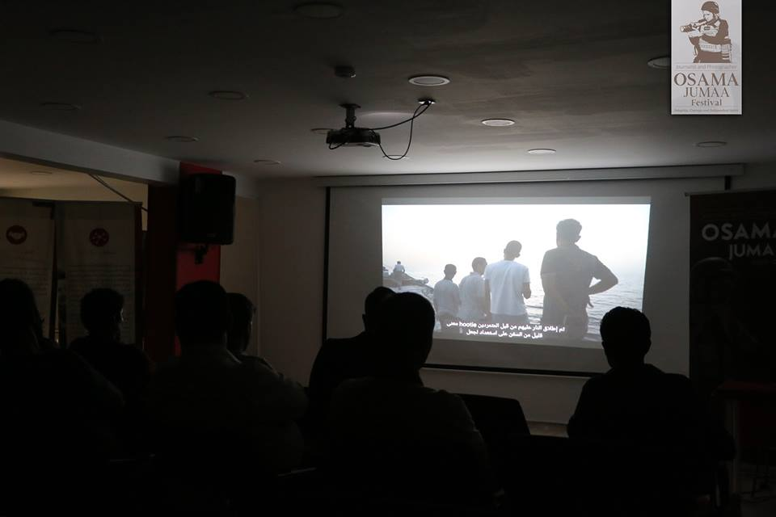
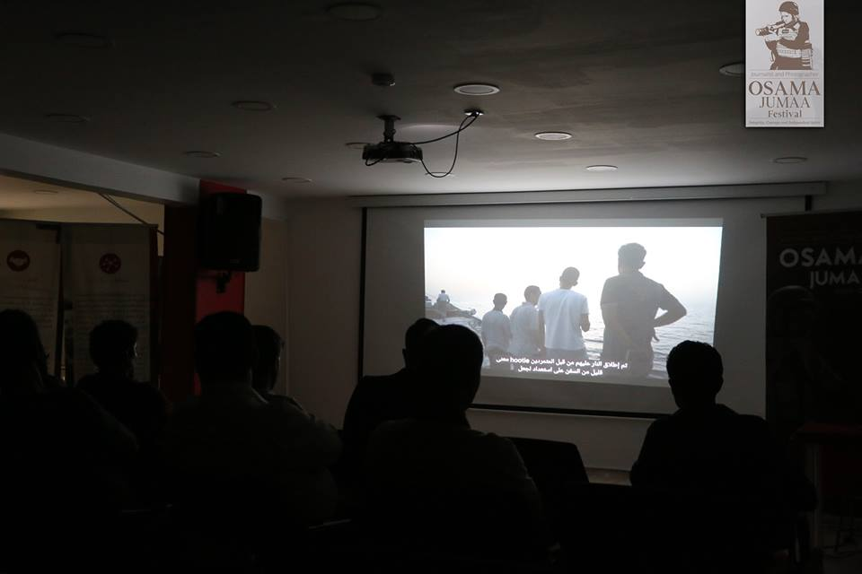
 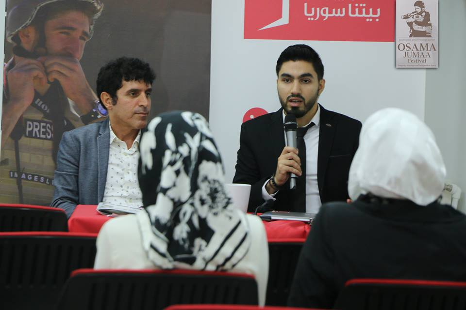
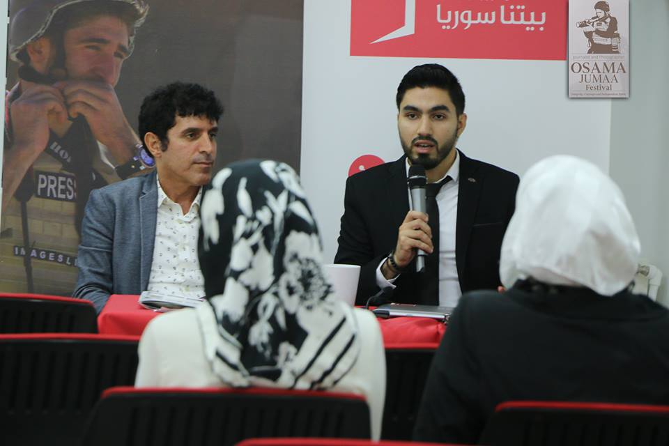


 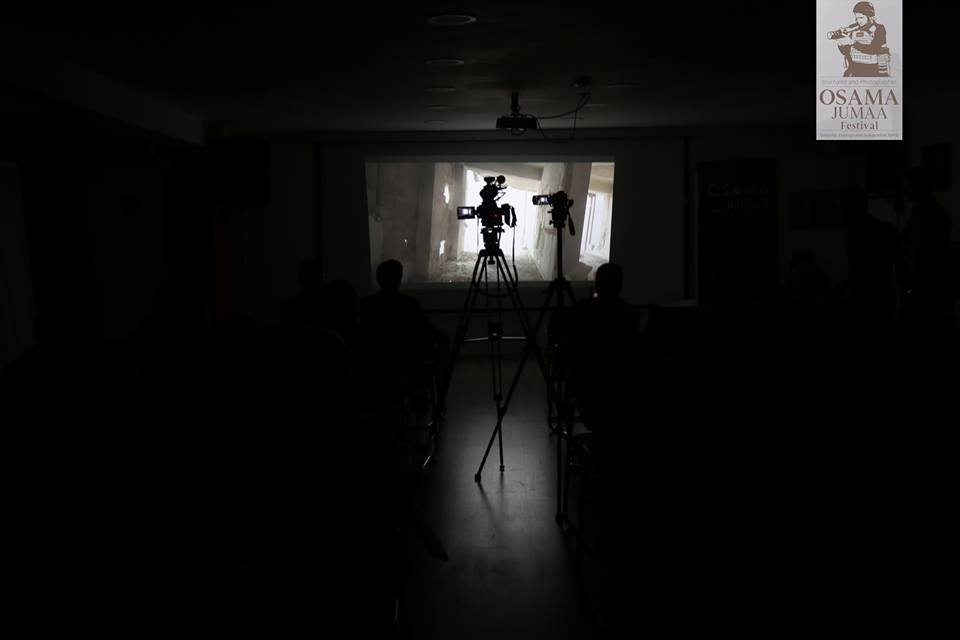
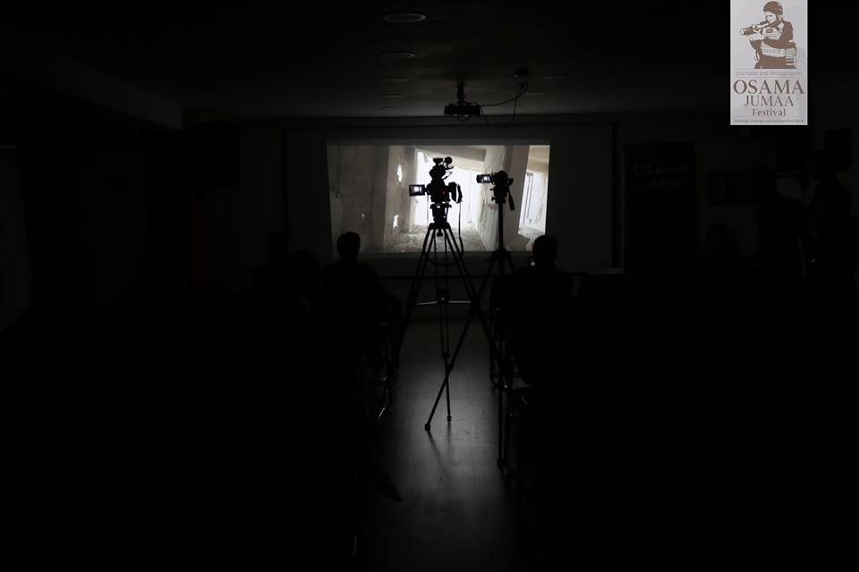
 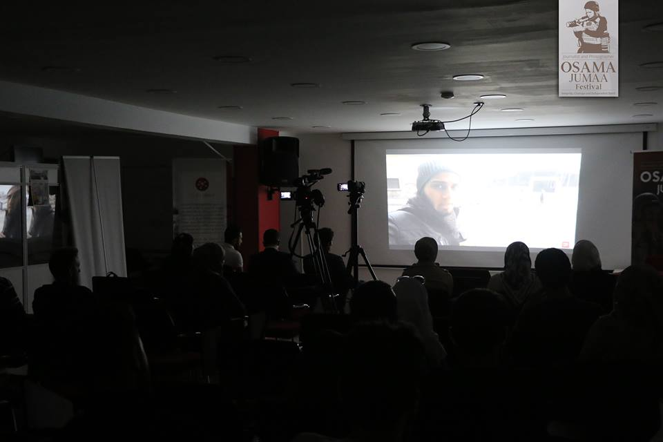
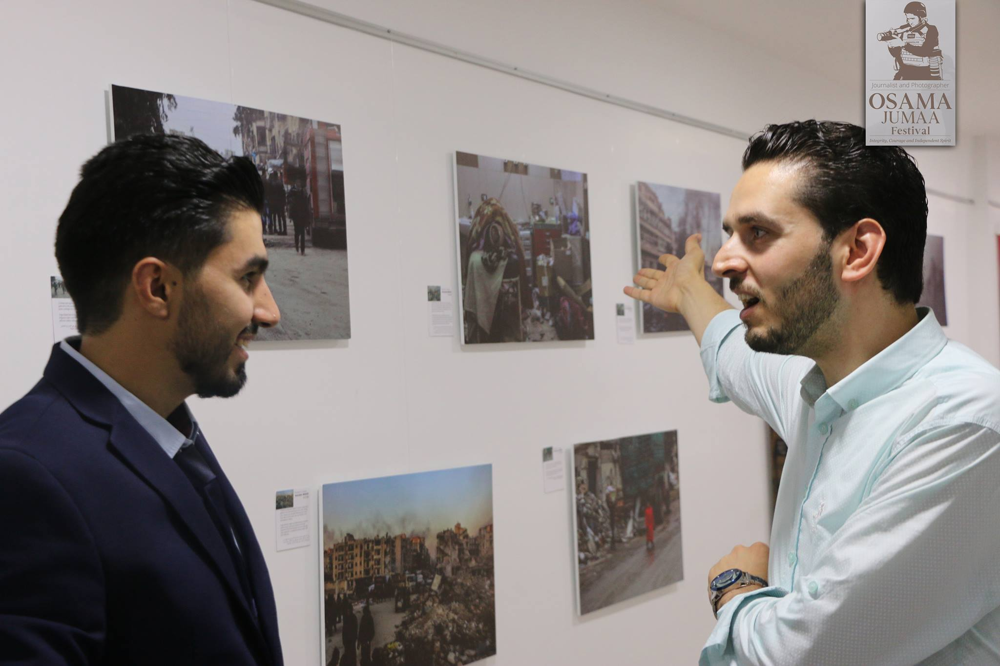
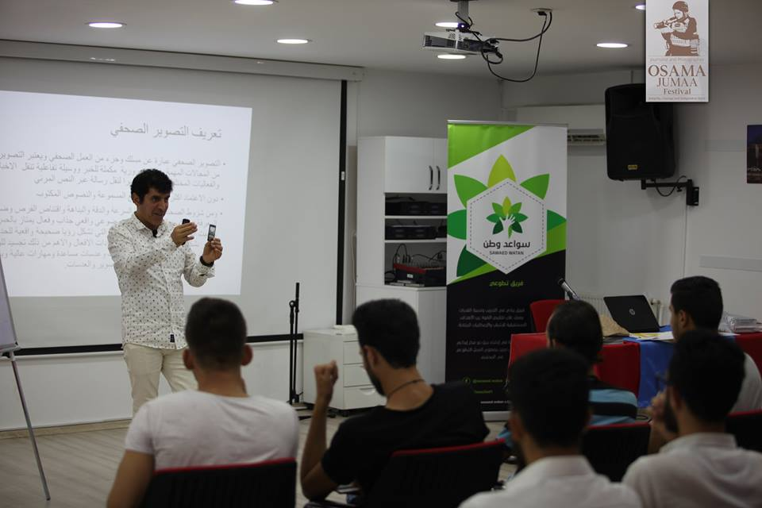
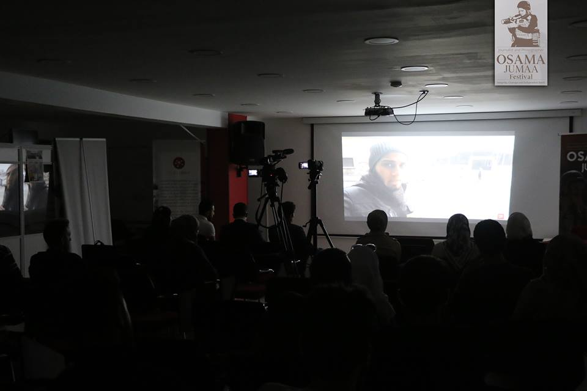
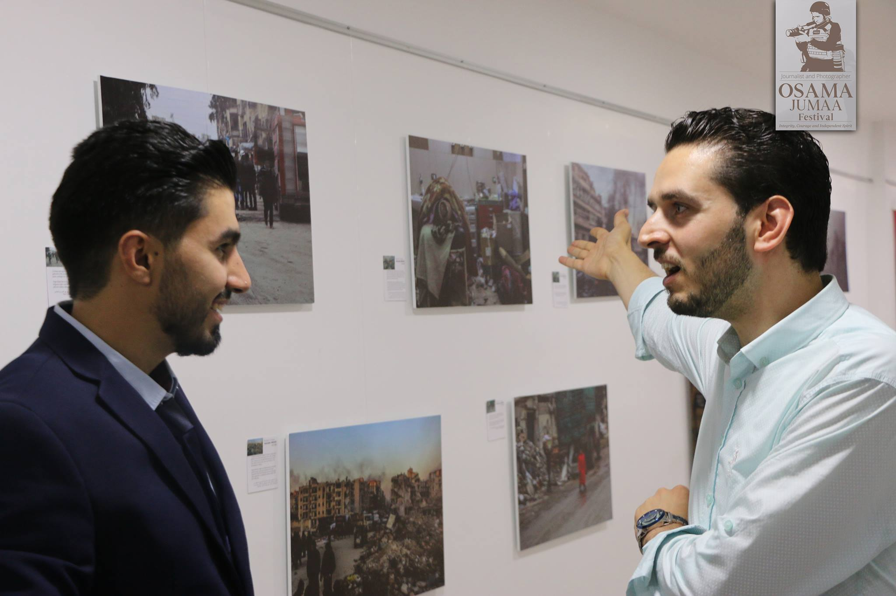
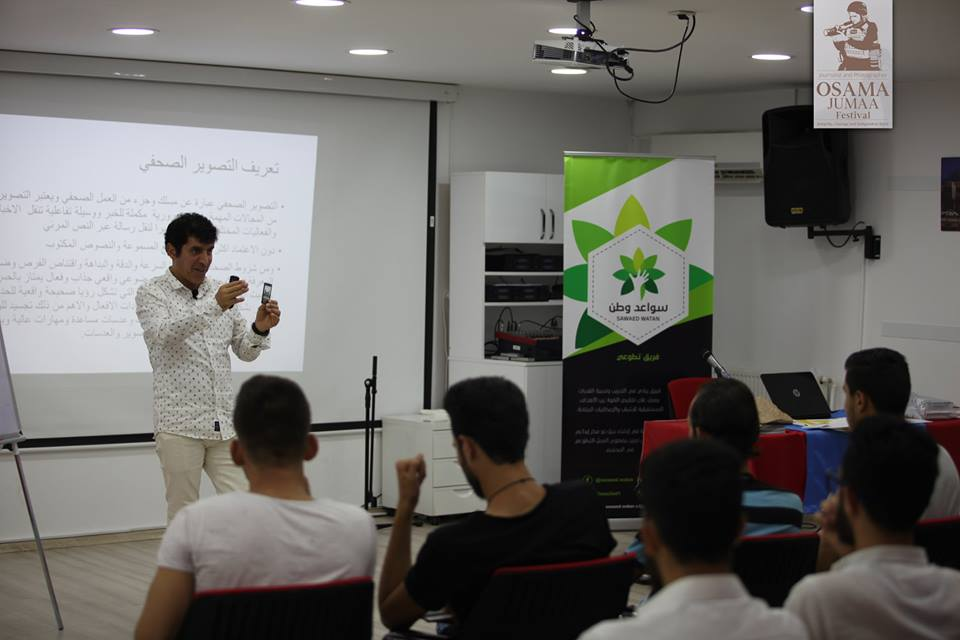